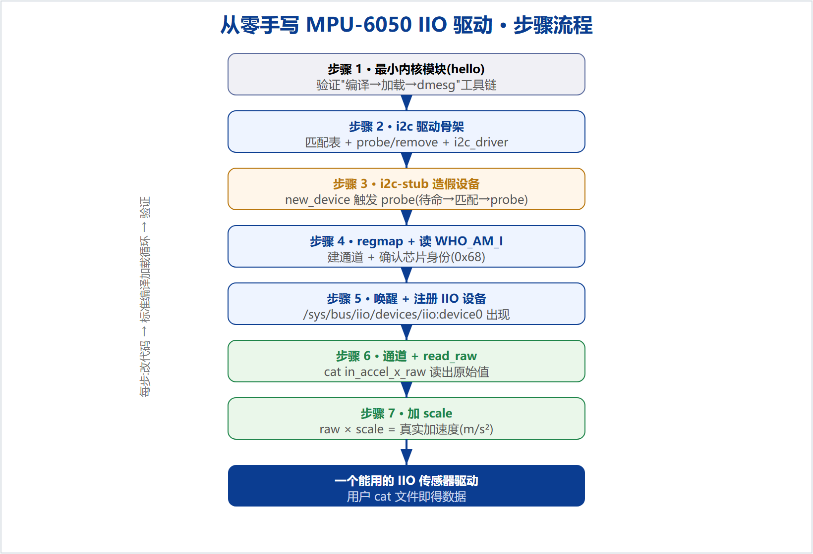

本手册带你在 Ubuntu 虚拟机上,从一个最小内核模块出发,一步步长成一个能被 cat 出数据的 IIO 加速度传感器驱动。全程用 i2c-stub 模拟一颗假 MPU6050,不需要真硬件。核心方法:骨架优先 → 增量填肉 → 每加一小块就编译验证(图 1)。

uname -r # 内核版本(本手册为 5.4) gcc --version | head -1 # 需要 gcc ls /lib/modules/$(uname -r)/build # 需要内核头文件 modinfo i2c-stub >/dev/null && echo ok # 需要 i2c-stub
make # 1) 编译出 .ko sudo make install # 2) 装到 /lib/modules/.../extra/ sudo depmod -a # 3) 重建依赖库 sudo modprobe mpu6050_iio # 4) 加载 dmesg | tail # 看日志 sudo modprobe -r mpu6050_iio # 卸载
/lib/modules 的命令(install/depmod/modprobe)都要 sudo;make 本身不用。改代码后若用 modprobe,务必重跑 install+depmod,否则加载的是旧版本。Makefile(缩进两行是 TAB):
KERNELDIR := /lib/modules/$(shell uname -r)/build CURRENT_PATH := $(shell pwd) obj-m := hello.o build: kernel_modules kernel_modules: $(MAKE) -C $(KERNELDIR) M=$(CURRENT_PATH) modules install: $(MAKE) -C $(KERNELDIR) M=$(CURRENT_PATH) modules_install clean: $(MAKE) -C $(KERNELDIR) M=$(CURRENT_PATH) clean
hello.c:
#include <linux/module.h>
#include <linux/init.h>
static int __init hello_init(void){ pr_info("hello: loaded\n"); return 0; }
static void __exit hello_exit(void){ pr_info("hello: unloaded\n"); }
module_init(hello_init);
module_exit(hello_exit);
MODULE_LICENSE("GPL");
验证:走标准循环,dmesg 应出现 hello: loaded。
module_init/exit 注册加载/卸载回调;pr_info 打到内核日志(dmesg 看)。加载时的 tainting kernel 是未签名模块的正常提示。改 Makefile 的 obj-m := mpu6050_iio.o,写 mpu6050_iio.c(骨架):
#include <linux/module.h>
#include <linux/i2c.h>
#include <linux/mod_devicetable.h>
static int mpu6050_probe(struct i2c_client *client, const struct i2c_device_id *id)
{ dev_info(&client->dev, "probe: matched at 0x%02x\n", client->addr); return 0; }
static const struct i2c_device_id mpu6050_id[] = { { "mpu6050", 0 }, { } };
MODULE_DEVICE_TABLE(i2c, mpu6050_id);
static const struct of_device_id mpu6050_of_match[] = {
{ .compatible = "invensense,mpu6050" }, { } };
MODULE_DEVICE_TABLE(of, mpu6050_of_match);
static struct i2c_driver mpu6050_driver = {
.driver = { .name = "mpu6050_iio", .of_match_table = mpu6050_of_match },
.probe = mpu6050_probe, .id_table = mpu6050_id,
};
module_i2c_driver(mpu6050_driver);
MODULE_LICENSE("GPL");
module_i2c_driver 注册驱动后它"待命";id_table/of_match 是"我认得哪些设备"的表。此时加载驱动,probe 还不会被调用——因为总线上还没有匹配的设备(见步骤 3)。# 加载驱动(走标准循环),然后:
sudo modprobe i2c-stub chip_addr=0x68 # 造假总线+假芯片(0x68)
# 找出假总线是 i2c 几号:
N=$(for d in /sys/class/i2c-adapter/i2c-*; do grep -qi stub "$d/name" && echo "${d##*i2c-}"; done)
echo "stub = i2c-$N"
# 在这条总线上造一个名叫 mpu6050 的设备:
sudo sh -c "echo mpu6050 0x68 > /sys/bus/i2c/devices/i2c-$N/new_device"
dmesg | tail -3 # 预期:probe: matched ...
new_device=在总线上造出一个设备(相当于真板子上设备树干的事)。设备名字和 id_table 对上 → 内核自动调 probe。这就是"待命→匹配→probe"。清理:echo 0x68 > .../delete_device。probe 里新增(需 #include <linux/regmap.h>):
static const struct regmap_config mpu6050_regmap_config = {
.reg_bits = 8, .val_bits = 8, .max_register = 0x75,
};
/* probe 内: */
struct regmap *regmap = devm_regmap_init_i2c(client, &mpu6050_regmap_config);
unsigned int whoami;
regmap_read(regmap, 0x75, &whoami);
dev_info(&client->dev, "WHO_AM_I = 0x%02x\n", whoami);
让假芯片"假装"是真的(装 i2c-tools 后,把假芯片 0x75 寄存器写成 0x68):
sudo apt install -y i2c-tools sudo i2cset -y 0 0x68 0x75 0x68 # 设备未绑定时写;之后再 new_device # 预期:dmesg 出现 WHO_AM_I = 0x68
regmap 就是这个统一通道。WHO_AM_I 是芯片出厂固化的身份码,量产驱动 probe 第一步都读它。注意本机内核 5.4 没有 dev_err_probe(5.9 才有),用普通 dev_err。引入私有数据 + iio_dev(需 #include <linux/iio/iio.h>):
struct mpu6050_data { struct regmap *regmap; };
static const struct iio_info mpu6050_info = { }; /* 暂空 */
/* probe 内: */
struct iio_dev *indio_dev = devm_iio_device_alloc(&client->dev, sizeof(struct mpu6050_data));
struct mpu6050_data *data = iio_priv(indio_dev);
data->regmap = devm_regmap_init_i2c(client, &mpu6050_regmap_config);
/* ... 读 WHO_AM_I ... */
regmap_update_bits(data->regmap, 0x6B, (1<<6), 0); /* 清 PWR_MGMT_1 的 SLEEP 位 */
indio_dev->name = "mpu6050";
indio_dev->modes = INDIO_DIRECT_MODE;
indio_dev->info = &mpu6050_info;
devm_iio_device_register(&client->dev, indio_dev);
验证:ls /sys/bus/iio/devices/ 出现 iio:device0;cat .../iio:device0/name = mpu6050。
devm_iio_device_alloc 一次分配"iio 设备 + 你的私有结构",iio_priv() 取私有部分。devm_iio_device_register 就是"开柜台"。devm_ 前缀=设备移除时自动释放,不用手写清理。#define MPU6050_REG_ACCEL_XOUT_H 0x3B
#define MPU6050_ACCEL_CHANNEL(axis, idx) { \
.type = IIO_ACCEL, .modified = 1, .channel2 = IIO_MOD_##axis, \
.info_mask_separate = BIT(IIO_CHAN_INFO_RAW), .address = idx, }
static const struct iio_chan_spec mpu6050_channels[] = {
MPU6050_ACCEL_CHANNEL(X, 0), MPU6050_ACCEL_CHANNEL(Y, 1), MPU6050_ACCEL_CHANNEL(Z, 2),
};
static int mpu6050_read_raw(struct iio_dev *indio_dev,
struct iio_chan_spec const *chan, int *val, int *val2, long mask)
{
struct mpu6050_data *data = iio_priv(indio_dev);
unsigned int h, l; int reg;
if (mask == IIO_CHAN_INFO_RAW) {
reg = MPU6050_REG_ACCEL_XOUT_H + chan->address * 2;
regmap_read(data->regmap, reg, &h);
regmap_read(data->regmap, reg + 1, &l);
*val = (s16)((h << 8) | l);
return IIO_VAL_INT;
}
return -EINVAL;
}
/* iio_info 改成: { .read_raw = mpu6050_read_raw }; probe 里加通道: */
indio_dev->channels = mpu6050_channels;
indio_dev->num_channels = ARRAY_SIZE(mpu6050_channels);
验证(给假芯片预置 X 加速度后):
sudo i2cset -y 0 0x68 0x3b 0x12 # X 高字节 sudo i2cset -y 0 0x68 0x3c 0x34 # X 低字节 => 0x1234 = 4660 cat /sys/bus/iio/devices/iio:device0/in_accel_x_raw # 预期 4660
in_accel_x_raw 等文件;用户 cat 时内核回调你的 read_raw,你 regmap 读两个寄存器(高/低字节)拼成 16 位有符号数返回。真芯片这些寄存器由硬件实时更新。/* 通道宏加一行,三轴共用一个 in_accel_scale: */ .info_mask_shared_by_type = BIT(IIO_CHAN_INFO_SCALE), /* read_raw 加一个分支: */ case IIO_CHAN_INFO_SCALE: *val = 0; *val2 = 598550; /* ±2g: 9.80665/16384 ≈ 0.000598550 */ return IIO_VAL_INT_PLUS_NANO;
验证:
cat .../in_accel_scale # 0.000598550 cat .../in_accel_x_raw # 4660 # 真实加速度 = 4660 × 0.000598550 ≈ 2.79 m/s²
info_mask_shared_by_type 表示该属性"同类通道共享"→ 只生成一个 in_accel_scale。IIO_VAL_INT_PLUS_NANO 表示返回值 = val + val2×1e-9。// SPDX-License-Identifier: GPL-2.0
#include <linux/module.h>
#include <linux/i2c.h>
#include <linux/mod_devicetable.h>
#include <linux/regmap.h>
#include <linux/iio/iio.h>
#define MPU6050_REG_WHO_AM_I 0x75
#define MPU6050_WHO_AM_I_VAL 0x68
#define MPU6050_REG_PWR_MGMT_1 0x6B
#define MPU6050_PWR1_SLEEP (1 << 6)
#define MPU6050_REG_ACCEL_XOUT_H 0x3B
struct mpu6050_data { struct regmap *regmap; };
static const struct regmap_config mpu6050_regmap_config = {
.reg_bits = 8, .val_bits = 8, .max_register = 0x75,
};
#define MPU6050_ACCEL_CHANNEL(axis, idx) { \
.type = IIO_ACCEL, .modified = 1, .channel2 = IIO_MOD_##axis, \
.info_mask_separate = BIT(IIO_CHAN_INFO_RAW), \
.info_mask_shared_by_type = BIT(IIO_CHAN_INFO_SCALE), \
.address = idx, }
static const struct iio_chan_spec mpu6050_channels[] = {
MPU6050_ACCEL_CHANNEL(X, 0),
MPU6050_ACCEL_CHANNEL(Y, 1),
MPU6050_ACCEL_CHANNEL(Z, 2),
};
static int mpu6050_read_raw(struct iio_dev *indio_dev,
struct iio_chan_spec const *chan, int *val, int *val2, long mask)
{
struct mpu6050_data *data = iio_priv(indio_dev);
unsigned int h, l; int reg, ret;
switch (mask) {
case IIO_CHAN_INFO_RAW:
reg = MPU6050_REG_ACCEL_XOUT_H + chan->address * 2;
ret = regmap_read(data->regmap, reg, &h); if (ret) return ret;
ret = regmap_read(data->regmap, reg + 1, &l); if (ret) return ret;
*val = (s16)((h << 8) | l);
return IIO_VAL_INT;
case IIO_CHAN_INFO_SCALE:
*val = 0; *val2 = 598550;
return IIO_VAL_INT_PLUS_NANO;
default:
return -EINVAL;
}
}
static const struct iio_info mpu6050_info = { .read_raw = mpu6050_read_raw };
static int mpu6050_probe(struct i2c_client *client, const struct i2c_device_id *id)
{
struct iio_dev *indio_dev;
struct mpu6050_data *data;
unsigned int whoami; int ret;
indio_dev = devm_iio_device_alloc(&client->dev, sizeof(*data));
if (!indio_dev) return -ENOMEM;
data = iio_priv(indio_dev);
data->regmap = devm_regmap_init_i2c(client, &mpu6050_regmap_config);
if (IS_ERR(data->regmap)) { dev_err(&client->dev, "regmap init failed\n");
return PTR_ERR(data->regmap); }
ret = regmap_read(data->regmap, MPU6050_REG_WHO_AM_I, &whoami);
if (ret) return ret;
if (whoami == MPU6050_WHO_AM_I_VAL) dev_info(&client->dev, "MPU-6050 detected!\n");
else dev_warn(&client->dev, "unexpected WHO_AM_I 0x%02x\n", whoami);
regmap_update_bits(data->regmap, MPU6050_REG_PWR_MGMT_1, MPU6050_PWR1_SLEEP, 0);
indio_dev->name = "mpu6050";
indio_dev->modes = INDIO_DIRECT_MODE;
indio_dev->info = &mpu6050_info;
indio_dev->channels = mpu6050_channels;
indio_dev->num_channels = ARRAY_SIZE(mpu6050_channels);
return devm_iio_device_register(&client->dev, indio_dev);
}
static const struct i2c_device_id mpu6050_id[] = { { "mpu6050", 0 }, { } };
MODULE_DEVICE_TABLE(i2c, mpu6050_id);
static const struct of_device_id mpu6050_of_match[] = {
{ .compatible = "invensense,mpu6050" }, { } };
MODULE_DEVICE_TABLE(of, mpu6050_of_match);
static struct i2c_driver mpu6050_driver = {
.driver = { .name = "mpu6050_iio", .of_match_table = mpu6050_of_match },
.probe = mpu6050_probe, .id_table = mpu6050_id,
};
module_i2c_driver(mpu6050_driver);
MODULE_LICENSE("GPL");
MODULE_AUTHOR("yyf");
MODULE_DESCRIPTION("MPU-6050 IIO driver (learning)");
make 为准。missing separator = Makefile 缩进不是 TAB。stray '\xxx' = 把中文讲解粘进了 .c;.c 里只能有代码(中文只能在注释里)。depmod: Permission denied = 忘了 sudo。make install + depmod -a。new_device 造设备。dev_err_probe 编不过 = 内核 < 5.9,用普通 dev_err。本手册为从零手写 IIO 驱动的操作记录,可照着复盘或重做。配套仓库:github.com/fyy0619-cell/xiangmu